비서-1급 (2017-05-14 기출문제)
1과목: 비서실무
1. 상사는 우리 회사의 새로운 고객이 된 ITC사의 강무원 대표이사와 다음 주에 점심식사를 하시겠다며 좋은 장소로 예약을 하라고 하신다. ITC사는 우리 회사가 많은 공을 들여 얻게 된 주요 고객사이다. 비서의 업무 자세로 가장 적절하지 않은 것은?
- 비서는 강무원 대표이사가 선호하는 음식점과 음식이 무엇인지 상대방의 비서에게 확인한 후 예약한다.
- 강무원 대표이사의 약력이나 ITC사와 관련된 최근 소식 등을 검색한 후 정리하여 상사에게 보고한다.
- 강무원 대표이사 비서와 좋은 인간관계를 형성하기 위해 필요한 정보를 서로 교환할 것을 제안한다.
- 식당 이동 경로와 이동 예상 시간을 확인하여 운전기사에게 미리 알려준다.
(정답률: 82%)

2. 상사의 출장 기간 중 중국 현지 시간으로 매일 오후 5시에 상사가 묶고 있는 중국 상하이 Four Seasons Hotel (Tel: 86-21-2020-1000)로 전화를 통한 업무 보고를 하기로 되어 있다. 서울에 있는 김 비서가 전화를 걸어야 하는 시각과 국제전화 통화 번호가 바르게 연결된 것은?(2번 공통지문 문제)
- 오후 5시, 00700-86-21-2020-1000
- 오후 6시, 00700-86-21-2020-1000
- 오후 5시, 002-1-86-21-2020-1000
- 오후 6시, 001-1-86-21-2020-1000
(정답률: 67%)
3. 상사의 인적 네트워크를 관리하기 위해 비서가 할 수 있는 업무들에 대한 설명이다. 가장 적절하지 않은 것은?
- 효과적인 인적 네트워크 관리를 위해서 가장 먼저 상사의 인적 관계를 파악해야 한다.
- 상사의 인적 네트워크 정보를 수집하였다면, 이를 비공개로 유지하면서 데이터베이스화 한다.
- 출처가 불분명한 정보일지라도 필요할 경우 참고자료로 활용한다.
- 인적 네트워크 정보는 외부 인사로 구성된 정보만을 그 내용으로 한다.
(정답률: 49%)
4. 상사는 우리회사 주요 거래처의 이민영 대표이사를 김영숙 비서에게 1층 로비로 내려가서 접견실까지 모시고 오라고 지시하셨다. 우리 회사는 대형빌딩의 32층에 위치하고 있다. 다음 중 김비서의 내방객 응대 자세로 적절하지 않은 것은?
- 김비서는 32층에서 내리는 사람이 너무 많아 손님보다 먼저 엘리베이터에서 내려서 다음 길을 안내하였다.
- 접견실 문은 왼편으로 미는 문이라 왼손을 이용하여 문을 열고 손님보다 먼저 들어갔다.
- 상사가 통화 중이라 손님을 접견실로 안내한 후 상사가 통화가 끝날 때까지 기다렸다.
- 복도에서는 손님의 대각선 방향으로 비켜선 자세로 2~3걸음 앞서 가며 안내하였다.
(정답률: 51%)
5. 로펌(Law Firm)에 근무하는 강비서가 내방한 외국인으로부터 받은 명함이다. 강비서가 위 손님을 응대하기 위한 요령으로 가장 바람직한 것은?
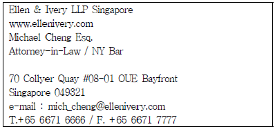
- Michael Cheng의 명함이름으로 보아 화교출신일 가능성이 높으므로 중국어로 반갑게 인사한다.
- Michael Cheng이 돌아가고 난 다음에 명함에 명함을 받은 날짜와 인적 특징을 기재하였다.
- 홍차가 유명한 싱가폴 출신 Michael Cheng이 방문한 시간이 오전 11시 이므로 차를 내올 때 High Tea를 준비하여 드린다.
- 점심식사 장소를 Singapore 사람들이 선호하는 Sea Food 음식점으로 예약하였다.
(정답률: 73%)
6. 비서가 업무를 수행하면서 이루어지는 상사, 동료, 고객과의 인간관계에 대한 설명으로 가장 적절하지 않은 것은?
- 상사와 회사의 이익을 증진시킴으로써 자신의 이익을 도모 할 수 있다는 믿음을 갖는다.
- 내게 부과된 책임이나 활동에 대해서 책임을 지고 수행한다. 특히, 자신의 책임사항에 관한 한 상사의 직접적인 감독 없이도 이행한다.
- 동료 비서들이 나를 신뢰할 수 있도록 모든 약속을 충실히 이행하며, 임원 관련 업무 내용을 공유하여 협동 관계를 유지한다.
- 방문객을 맞을 때나 전화응대를 할 때 회사의 이미지를 높이도록 노력한다.
(정답률: 50%)
7. 다음 주에 개최되는 신제품 발표회를 준비하느라 박서연 비서는 매우 바쁜 상황이다. 4시에 약속된 현대건설의 민태성 상무님이 약속시간보다 조금 일찍 방문하셨다. 상사가 지금 중요한 전화 통화중이라고 말씀드리니 당신이 일찍 왔으니 기다리시겠다고 하셔서 접견실로 안내하고 자리로 돌아왔으나 상사는 진지한 표정으로 계속 통화 중이었다. 박비서는 신제품 발표회 초청장 마무리 작업에 다시 몰두하였다. 그러다 시계를 보니 4시 10분이 지났고 상사도 전화를 끊고 업무 중이셨다. 이 경우 박 비서의 업무 자세로 가장 바람직한 것은?
- 상사에게 본인의 잘못을 말씀드리고 얼른 접견실로 상사를 안내한다.
- 접견실로 얼른 가서 오랫동안 기다리게 해서 죄송하다고 말씀드리고 상사 통화가 끝났으므로 곧 오신다고 말씀드린다.
- 손님에게 자신의 실수로 오랫동안 기다리게 된 상황을 설명드리면서 전적으로 자신의 잘못임을 밝힌다.
- 손님에게 자신의 잘못을 사과하고 상사에게도 자신의 실수를 알려 상사 또한 손님에게 사과할 수 있도록 한다.
(정답률: 56%)
8. Z company의 장전무는 개인비서인 양비서에게 경리팀장과 회계 팀장과의 회의일정을 잡으라고 지시하였다. 양비서가 상사의 일정을 관리하기 위해서 수행한 업무 일부를 아래에 나열하였다. 상사의 일정을 효율적으로 관리하기 위해 수행한 업무를 가장 합리적인 순서로 나열한 것은 어느 것인가?
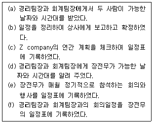
- c - e - d - a - b - f
- a - d - b - f - e - c
- c - e - a - d - b - f
- c - e - f - d - a - b
(정답률: 52%)
9. 그림은 예약 업무의 순서도이다. (가)에 들어갈 업무 수행 방식에 대한 설명으로 가장 옳은 것은?
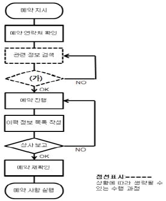
- 예약을 진행하면서 예약 이력 정보 목록을 수시로 업데이트한다.
- 예약 정리 목록을 근거로 구체적이고 상세하게 하여 문서로 보고한다.
- 예약과 관련된 주요 내용을 간단명료하게 상사에게 보고한 후 상사의 승인을 받는다.
- 구두로 보고할 때는 원칙에 근거하지 않고 예약 종류별로 필요한 핵심 내용을 간단명료하게 보고한다.
(정답률: 64%)
10. 다음 메일의 내용을 읽고 아래의 설명 중 적절하지 않은 것은?
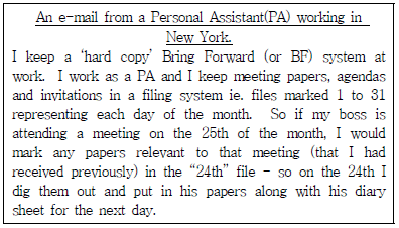
- 초청장의 리셉션 날짜가 7월 3일이므로 초청장을 숫자 '2'의 폴더에 넣어 둔다. 2일 아침 초청장을 꺼내어 상사에게 보고 한 뒤 다음날 상사가 지참하고 행사에 참석할 수 있도록 보좌한다.
- Bring Forward Filing System을 활용하고 있는 비서의 사례이다.
- 총 31개의 폴더를 마련하여 각 폴더의 귀에 1~31의 숫자를 마크해 둔다.
- 7월 3일에는 7월 3일 폴더를, 8월 3일에는 8월 3일 폴더에 들어있는 내용물을 확인한다.
(정답률: 62%)
11. 다음은 비서가 상사의 해외출장을 준비할 때, 해야 할 업무들을 나열한 것이다. 다음 4가지 업무 중에서 세 번째에 할 업무는 어느 것인가?
- 호텔 예약 시 선결제를 요구하여 비서가 미리 결제한다.
- 출장 계획을 수립하여 상사의 결재를 받는다.
- 출장 경비 규정을 확인한다.
- 출장 신청서를 작성해 회사의 승인을 얻는다.
(정답률: 50%)
12. 다음과 같은 상황에 적합한 회의장 좌석 배치 형태는 무엇인가?
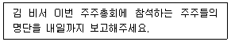
- 네모형
- 원탁형
- V자형
- 교실형
(정답률: 49%)
13. 의전행사 준비를 위해 알아야 할 드레스 코드(dress code)에 대한 설명으로 가장 적절하지 않은 것은?
- 초청장에 드레스 코드가 명시된 경우 참석자는 드레스 코드에 맞는 복장을 착용한다.
- 야회복(white tie)은 상의의 옷자락이 제비 꼬리 모양을 하고 있어 연미복(tailcoat)이라고도 하는데 무도회나 정식 만찬 또는 저녁 파티 등에 사용된다.
- 초청장에 Dress Blue or Equivalent라고 명시된 경우 군인의 경우 제복을 착용하면 된다.
- 평상복(informal)은 lounge suit, business suit라고도 하는데, 색깔은 제한이 없으며 재킷과 바지의 색깔이 다른 것을 입어도 된다.
(정답률: 72%)
14. 다음 중 국제매너에 있어서 기본적인 관례상의 서열 기준에 대한 설명으로 가장 적절하지 않은 것은?
- 부부 동반의 경우 부인의 서열은 남편과 동급이다.
- 여성 간 서열은 기혼, 미망인, 이혼, 미혼 순이다.
- 내국인과 외국인이 있을 때는 내국인을 관례상 상위로 간주한다.
- 높은 직위 쪽의 서열이 상위이다.
(정답률: 69%)
15. 다음은 비서들이 상사가 지시한 업무를 수행하거나 업무상 보고를 하면서 취한 행동을 설명한 것이다. 각 비서들이 취한 행동 중 효율 적인 보고를 위해 가장 바람직한 예시는 어느 것인가?
- 고비서의 상사는 어제 미국으로 출장을 가셨다. 상사가 출국하시기 전에 시간을 가지고 천천히 생각해 보라고 주신 업무를 빠르게 해결한 고비서는 기쁜 마음에 시차를 체크하고는 바로 상사에게 전화로 보고 드렸다.
- 이비서는 상사가 급한 성격인 것을 잘 알고 있으므로, 구두 보고를 드릴 때는 결론부터 먼저 말하고 난 후에 관련된 경과나 이유, 소견 등을 말하려고 노력해 왔다.
- 장비서에게 모레까지 상사에게 보고해야 할 내용이 생겼다. 이를 잊지 않기 위해서, 장비서는 상사가 오찬을 마치고 들어오시자마자 신속히 보고 드렸다.
- 안비서는 보고용으로 기안한 문서가 한 장이면 상사에게 드릴문서 한 장만을 들고 상사의 집무실로 가서 보고 드렸다. 혹시라도 관련 참고 자료들이나 보고문서 여러 장을 함께 들고 갔다가, 정리가 안 되어 보이거나 잘못된 문서를 드리는 실수를 미연에 방지하고자 하였다.
(정답률: 83%)
16. 다음은 다양한 보고 형태에 대한 설명이다. 가장 바르게 설명된 것을 고르시오.
- 지금은 오후 2시, 30분 뒤에 시작될 회의의 변경 소식을 들었다. 평소 상사는 문서 보고를 선호하셔서 집무실에 계시는 상사에게 이메일로 회의시간 변경을 보고 드린다.
- 상사가 성격이 급하신 편이라 보고서를 작성하며 문장을 개조식으로 간략하게 작성하려 노력 중이다.
- 우연히 상사의 좌천에 대한 소식을 듣게 되었다. 아직 인사발표 전이나 이 사실을 직접 뵙고 전달하기가 부담스러워 상사에게 이메일로 알려 드렸다.
- 보고서 내용에 충실하기 위하여 그림이나 도표 삽입보다는 텍스트 위주로 성실히 작성하였다.
(정답률: 70%)
17. 사장비서직을 담당하고 있는 이가현은 언론사에 노출되는 자사관련 자료 수집 및 관리를 담당하고 있다. 자사관련 기사를 점검 할 때 비서로서 갖추어야 할 태도 중 가장 부적절한 것을 고르시오.
- 회사 관련 기사를 읽을 때 자사관련 상품 이름 또는 그 가격이 정확한지 확인한다.
- 우리 회사와 관련하여 기사화된 내용을 신속히 검색하여 관련부서에 보고한다.
- 언론에서 사용된 대표자의 사진이 잘 나왔는지 확인한다.
- 언론에서 보도된 기사의 전체 흐름이 자사의 이미지에 잘 어울리지 않을 경우 즉시 정정 보도를 요청한다.
(정답률: 57%)
18. 비서가 상사의 친지나 친구, 자사나 거래처 사람, 그리고 기타관계자의 사망 소식을 들으면 할 수 있는 업무와 조문 예절에 대한 내용으로 옳지 않은 것은 어느 것인가?
- 사망 소식을 들으면, 즉시 사망 일시, 조문 장소, 발인 시각과 장지, 장례 형식, 상주 성명, 주소, 전화번호 등을 확인하여 상사에게 보고한다.
- 부의(賻儀), 근조(謹弔), 위령(慰靈), 하의(賀儀) 등의 문구가 쓰여진 겉봉투를 준비한다.
- 조문을 위해 빈소에 도착하면 조객록에 서명을 한 다음 분향 또는 헌화한다.
- 조문하는 중에, 영정을 향해서 두 번 절을 한 후 반절을하는데, 이 때 남성은 오른손이 위로 가도록 하고, 여성은 왼손이 위로 가게 한다.
(정답률: 43%)
19. 김영숙 비서는 상사의 정보관리자로서 상사에게 필요한 정보를 확인하여 보고하고 있다. 다음 중 정보관리자로서 비서의 업무로 보기 어려운 것은 무엇인가?
- 언론사 중 공신력 있는 사이트를 선정하여 인사, 부음, 동정 및 인물정보를 검색할 수 있는 사이트를 확인한 후 즐겨찾기에 등록하고 매일 확인한다.
- 매일 아침 상사와 관련된 신문기사를 검색하여 관련 기사를 상사에게 보고한다.
- 인터넷 사이트에 올라와 있는 상사의 인물정보 및 프로필 등에 잘못된 부분이나 수정할 부분이 있을 경우 상사에게 보고하고 해당 사이트에 요청한다.
- 상사의 개인적인 대외 활동 내용이나 사진 등을 회사 블로그에 탑재함으로써 상사의 대외활동을 홍보한다.
(정답률: 76%)
2과목: 경영일반
20. 다음 중 기업의 사회적 책임에 대한 설명으로 가장 옳지 않은 것은?
- 기업의 사회적 책임은 청렴, 공정, 존중 등의 기본원칙을 충실히 이행하려는 책임감에서 비롯된다.
- 기업의 사회적 책임은 기업의 소유주뿐만 아니라 기업의 모든 이해관계당사자들의 복리와 행복에 대한 기업의 관심과 배려에 바탕을 두고 있다.
- 기업은 내부 거래자로 알려진 투자자들에게 기업의 비공개 내부정보를 제공할 사회적 책임이 있다.
- 기업은 종업원의 급여, 승진, 인사평가 등을 공정하게 할 사회적 책임이 있다.
(정답률: 76%)
21. 다음 중 경영환경 변화의 성격에 대한 설명으로 가장 적절하지 않은 것은?
- 기업의 경제적 환경뿐만 아니라 사회적, 정치적 환경의 중요 성이 부각되면서 경영환경의 범위가 확장되고 있다.
- 경영환경의 변화속도가 더욱 빨라지면서 기업의 신속한 대응과 변화를 예측하는 활동이 요구되고 있다.
- 기업활동이 성공하려면 기업은 외부환경과 양립할 수 있는 기업 내부환경을 만들어야 한다.
- 글로벌화로 인해 국제 표준이 강조되면서 경영환경의 복잡성은 줄어들고 불확실성이 낮아지고 있다.
(정답률: 80%)
22. 출자와 경영의 특징에 따라 기업형태를 구분할 때 이를 설명한 내용으로 다음 중 가장 적절한 것은?
- 합자회사는 2인 이상의 출자자가 회사의 채무에 연대무한 책임을 지는 기업형태이다.
- 주식회사의 최고의사결정기관은 이사회이다.
- 협동조합은 '영리주의'가 아닌 '이용주의'원칙에 따른다.
- 유한회사는 유한책임사원만으로 구성되므로 투명성 확보를 위한 재무제표에 대한 결산공고 등의 기업공개의무가 있다.
(정답률: 38%)
23. 다음 중 기업의 인수 및 합병(M&A)에 대한 설명으로 가장 적절 하지 않은 것은?
- 기업의 M&A는 자산가치가 높은 기업을 인수한 후 매각을 통한 차익획득을 위한 목적으로 진행되기도 한다.
- M&A 시장의 활성화를 통해 전문 경영인의 대리인 문제를 완화시키는 역할을 할 수 있다.
- M&A를 통해 전략적으로 중요하지 않은 사업부문을 처분하여 내적 건실화 전략을 추구할 수 있다.
- 우호적 M&A에서는 피매수대상기업의 의사와 관계없이 인수 합병이 진행될 때 매수기업의 저항이 나타난다.
(정답률: 62%)
24. 다음 중 기업의 다각화에 대한 설명으로 가장 적절하지 않은 것은?
- 다각화를 위한 방법으로 기업의 내부적 창업, 합작투자, 인수합병 등이 있다.
- 다각화된 기업은 내부의 자본력과 노동력을 적극적으로 활용할 수 있는 이점이 있다.
- 다각화를 통해 경영 위험을 분산하고 기업경영의 안정성을 도모할 수 있다.
- 자동차 제조회사가 타이어 제조업체를 인수하는 것을 다각화 라고 할 수 있다.
(정답률: 64%)
25. 다음에서 설명하는 '이것'에 해당하는 주식회사의 기관으로 가장 적절한 것은?
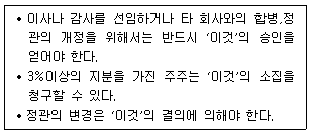
- 이사회
- 주주총회
- 감사위원회
- 사외이사
(정답률: 65%)
26. 다음 중 기업집중형태에 대한 설명으로 가장 적절하지 않은 것은?
- 시장독점을 위하여 기업의 독립성을 상실하고 하나의 기업체로 합동하는 것을 트러스트라고 한다.
- 신제품이나 신기술 등 아이디어의 개발과 발명을 하는 모험적인 중소기업을 벤처기업이라고 한다.
- 카르텔은 금융적 방법에 의한 기업집중의 형태이며 독점의 최고형태이다.
- 콘체른은 법률적으로는 독립적인 기업들이 자본적 결합관계를 통해 결합하는 형태이다.
(정답률: 59%)
27. 다음 중 경영통제에 관한 설명으로 가장 적절하지 않은 것은?
- 경영통제는 경영순환과정의 마지막 단계로써 다음의 계획수립 단계에 피드백하는 활동이다.
- 권한위임이 활발한 조직에서 결과에 대한 책임을 확실히하는 매커니즘으로 경영통제가 필요하다.
- 네트워크 정보망에 따라 경영통제의 범위가 넓어지고 속도가 빨라지고 있으며 이에 따라 중간경영층의 역할과 입지가 축소되는 경향이 있다.
- 경영통제는 성과표준에 근거한 경영계획을 평가하는 활동으로 관리자는 이 과정에서 환경변화에 대한 조직적 대응이 어렵다.
(정답률: 45%)
28. 현대사회에서 기업경영의 문제가 복잡해지고 자본이 분산됨에 따라 전문경영자가 출현하게 되었다. 다음 중 전문경영자에 대한 설명으로 가장 적절한 것은?
- 전문경영자는 단기적인 성과보다는 주주 이익의 극대화를 위해 장기적인 안목의 과감한 투자를 선호한다.
- 전문경영자는 소유경영자가 고용한 경영자로서 일부 경영활동을 위양 받아 이 부분에 대해서만 책임을 진다.
- 전문경영자는 경영합리화를 위해 종업원에게 권한을 위양하며 이를 통제하는 과정에서 대리인 비용을 발생시킨다.
- 전문경영자는 출자기능은 없고 경영기능만 담당한다.
(정답률: 36%)
29. 다음 중 경영관리의 포괄적 의미에 대한 설명으로 가장 적절한 것은?
- 경영관리란 조직목표를 설정하고 이를 달성하기 위한 절차와 방법을 찾는 것을 의미한다.
- 경영관리란 기업목표 및 경영목표를 보다 효과적으로 달성하기 위해 계획, 조직화, 지휘, 통제 등의 활동을 통해 기업의 제반자원을 배분, 조정, 통합하는 과정이다.
- 경영관리란 수립된 계획이 수행할 수 있도록 인적자원과 물적자원을 배분하여 최적 결과가 도출될 수 있도록 하는 것이다.
- 조직의 세부활동이 목적에 부합될 수 있도록 관리하고 통일되고 일관된 활동이 되도록 하는 것이다.
(정답률: 60%)
30. 다음은 동기부여이론의 설명이다. 이 중 가장 적절하지 않은 설명은 무엇인가?
- 매슬로우의 욕구단계이론은 생리적욕구, 안전욕구, 사회적욕구, 존경욕구, 자아실현의 욕구로 구성되어있다.
- 허즈버그의 2요인이론은 동기 위생이론으로 위생요인은 직무불만족요인으로 성취감, 인정, 책임감, 직무 자체 등이 있다.
- 맥클랜드의 성취동기이론은 성취욕구, 친교욕구, 권력욕구를 인간의 행위를 동기화시키는 주요요인으로 설명하고 있다.
- 브룸의 기대이론은 조직원들은 성과달성을 위한 노력을 하기전에 기대감, 수단성, 보상가치를 고려한다.
(정답률: 60%)
31. 다음 중 집단의사결정기법에 대한 설명으로 가장 적절하지 않은 것은?
- 명목집단기법은 구성원들이 각자 독립적으로 의사를 개진함으로써 집단구성원의 적극적 참여를 유도할 수 있다.
- 델파이기법은 전문가 집단의 의견을 수렴하고 분석하는 대면적 집단토의방법이다.
- 브레인스토밍은 아이디어 창출을 위한 과정이므로 아이디어에 대한 비판이나 평가는 하지 않는다.
- 브레인스토밍은 제시된 아이디어의 수정이나 개선을 허용함으로써 아이디어들의 융합을 가능하게 한다.
(정답률: 38%)
32. 마케팅에서 시장세분화 전략을 성공적으로 수행하기 위한 요건에 대한 설명으로 다음 중 가장 적절하지 않은 것은?
- 세분시장별로 세분시장의 규모와 구매력이 측정가능해야 한다.
- 세분시장 간에는 동질적인 소비자 욕구를 가져야 하고 세분 시장 내에서는 이질성을 극대화할 수 있어야 한다.
- 기업의 마케팅활동이 해당 시장에 소속된 고객들에게 접근 가능해야 한다.
- 경제성이 보장될 수 있는 충분한 시장규모를 가져야 한다.
(정답률: 64%)
33. 다음은 어떠한 직무평가방법을 서술한 내용인지 가장 적절한 것은?
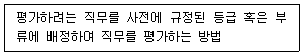
- 서열법(rank method)
- 직무분류법(job classification method)
- 요소비교법(fact comparison method)
- 점수법(point rating method)
(정답률: 66%)
34. 다음 중 마케팅 관련 설명으로 가장 적절하지 않은 것은?
- 마케팅이란 고객의 욕구를 충족시키기 위하여 기업이 행하는 시장과의 커뮤니케이션, 적시적소의 상품유통, 적정한 가격결정, 제품의 설계와 개발 등을 의미한다.
- 마케팅 믹스는 기업이 표적시장에서 마케팅 목표를 달성하기 위하여 활용할 수 있는 마케팅 변수를 말하며, 제품(product), 가격(price), 유통(place), 기획(planning) 등이 그것이다.
- 마케팅관리란 조직의 목표를 달성하기 위하여 마케팅활동의 대상이 되는 고객을 만족시킬 수 있는 마케팅전략과 계획을 수립하고, 그것을 실행 및 통제하는 일련의 활동을 말한다.
- 마케팅 조사는 회사가 직면하고 있는 마케팅문제와 관련된 시장환경이나 마케팅 활동의 성과 등에 대한 정보를 체계적이고 객관적으로 수집, 분석, 보고하는 일련의 활동을 말한다.
(정답률: 62%)
35. 종업원이 직무에 관한 지식과 기술을 현직에 종사하면서 감독자의 지시 하에 훈련받는 현장실무중심의 현직훈련을 의미하는 직무 현장훈련(OJT)에 해당하는 교육훈련방법은?
- 역할연기
- 도제식훈련
- e-러닝
- 세미나
(정답률: 69%)
36. 다음의 재무상태표(statement of financial position)의 설명 중 에서 가장 적절하지 않은 것은?
- 자산은 유동자산과 비유동자산으로 구분되는데, 유동자산은 투자자산, 유형자산, 무형자산으로 구분하고, 비유동자산은 당좌자산과 재고자산으로 구분한다.
- 부채는 유동부채와 비유동부채로 구분한다.
- 자산과 부채는 유동성이 큰 항목부터 배열하는 것을 원칙으로 한다.
- 자본은 자본금, 자본잉여금, 자본조정, 기타포괄 손익누계액 및 이익잉여금으로 구분한다.
(정답률: 45%)
37. 다음 중 통화정책에 대한 설명으로 가장 옳은 것은?
- 경기가 활황기인 경우 이자율을 높여서 돈을 빌리는 비용을 증가시킨다.
- 통화량을 감소시키면 기업은 더 많은 돈의 사용이 가능해지고 경제는 더 빨리 성장한다.
- 경기가 불황기인 경우 이자율을 높여서 돈을 빌리는 비용을 증가시킨다.
- 경제성장을 늦추고 인플레이션을 막기 위해 통화량을 증가 시킨다.
(정답률: 51%)
38. 에 들어갈 수 있는 가장 적절한 용어는 무엇인가?
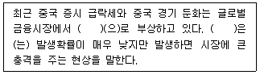
- 블랙스완
- 블랙먼데이
- 블랙마켓
- 블랙프라이데이
(정답률: 61%)
39. 다음은 무엇을 의미하고 있는지 가장 적절한 것은?
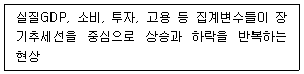
- 장기불황
- 호황국면
- 경기변동
- 인플레이션
(정답률: 69%)
3과목: 사무영어
40. Choose one which has the least appropriate definition for the underlined words.
- A detour is a special route for traffic to follow when the normal route is blocked.
- The venue for an event or activity is the place where it will happen.
- Your autograph is your name, written in your own characteristic way, often at the end of a document to indicate that you wrote the document or that you agree with what it says.
- The cabinet is a group of the most senior ministers in a government, who meet regularly to discuss policies.
(정답률: 29%)
41. Choose one that does not match each other.
- DST : Daylight Saving Time
- ROI : Return on Investment
- TBA : To Be Announced
- GDP : Gross Domain Product
(정답률: 56%)
42. Belows are sets of English sentence translated into Korean. Choose one which does not match correctly each other.
- My boss used to think he was superior to others. → 우리 사장님은 그가 다른 사람들보다 우월하다고 생각하곤 했었다.
- I am thinking about singing up for an online business class. → 나는 온라인 비즈니스 수업을 등록할까 생각 중이다.
- He stayed up all night preparing for his presentation. → 그는 프레젠테이션을 준비하느라 밤을 샜다.
- The secretary stopped to take minutes. → 비서는 회의록 작성하는 것을 멈추었다.
(정답률: 52%)
43. Which of the followings is correct in order?
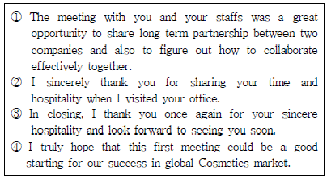
- ②①③④
- ②①④③
- ①②④③
- ④①②③
(정답률: 61%)
44. Read the following memorandum and choose one which is not true?
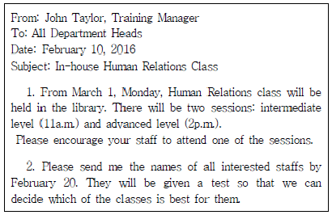
- Human Relations class is divided into two levels.
- The writer sent this memo to all department heads.
- All interested staffs should attend two sessions of Human Relations class.
- John Taylor is responsible for organizing the in-house training.
(정답률: 59%)
45. Choose the set which arranges the correct order in a business letter.
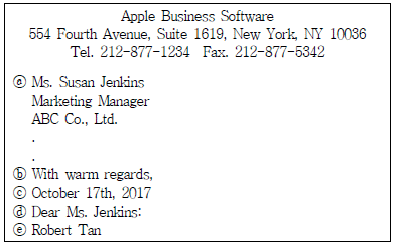
- ⓐ → ⓒ → ⓓ → ⓔ → ⓑ
- ⓒ → ⓐ → ⓓ → ⓑ → ⓔ
- ⓒ → ⓔ → ⓐ → ⓓ → ⓑ
- ⓔ → ⓒ → ⓓ → ⓐ → ⓑ
(정답률: 47%)
46. Which of the followings is the most appropriate for the blank boxes?
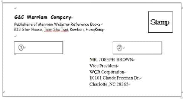
- ① HOLD FOR ARRIVAL, ② VIA AIR MAIL
- ① CONFIDENTIAL, ② PLEASE FORWARD
- ① SPECIAL DELIVERY, ② REGISTERED
- ① CONFIDENTIAL, ② PRIVATE
(정답률: 35%)
47. Choose the most appropriate expression that has the same meaning of the underlined word.
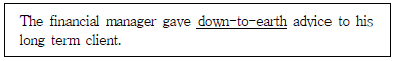
- practical
- profitable
- critical
- determined
(정답률: 35%)
48. What is the following passage referring to?
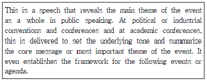
- Congratulatory remarks
- Keynote address
- Closing remarks
- Welcoming speech
(정답률: 45%)
49. Read the following conversation and choose one which is not true?
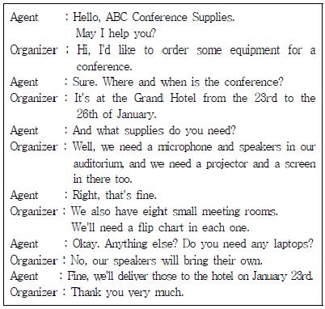
- The conference will be held at the Grand Hotel for four days.
- The customer doesn't need to order a laptop.
- The organizer of the conference needs several conference equipment.
- There are six small meeting rooms for a conference.
(정답률: 66%)
50. Which of the followings is true to the itinerary preparedby a secretary for her boss as given below?
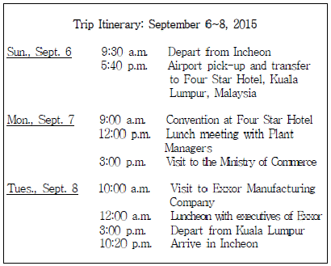
- The boss will go on a business trip for three business days.
- He will transfer to hotel by airport limousine.
- The main purpose of this trip is to visit the Ministry of Commerce.
- The place for lunch with Exxor members is not specified in the itinerary.
(정답률: 36%)
51. Read the following sets of Q&A conversation and choose one that does not match each other.
- A : Why don't you go to a Korean tourist attraction near here?<chal>B : Great. Do you know anywhere you'd like to recommend?
- A : We had a three-hour layover in JFK airport.<chal>B : I'm glad to hear that. I've heard a lot about you from Ms. Jones.
- A : Would you like to join us for dinner if you are not busy?<chal>B : Thank you. I'd like that very much.
- A : Let me take one of your bags.<chal>B : That's very thoughtful of you.
(정답률: 58%)
52. Which of the followings is the most appropriate expression for the blank ⓐ?
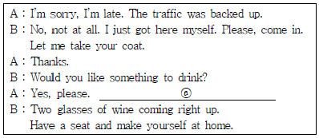
- It smells delicious.
- I don't know anything about Korean food. What can you suggest?
- I appreciate your invitation to dinner.
- Whatever you're having will be fine.
(정답률: 55%)
53. Read the following schedule. What activity is not on the schedule?
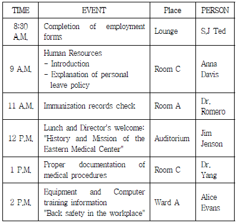
- Safety training
- Record keeping
- Checking immunizations
- Getting parking permits
(정답률: 60%)
54. Which of the followings is the most appropriate expression for the blank?
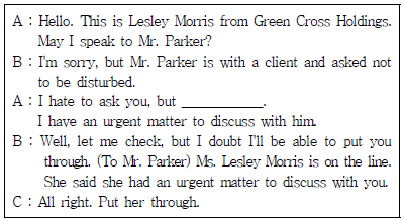
- Please stop him for me.
- Could you please interrupt him for me?
- Please tell him I'll call again.
- I will get back to him.
(정답률: 62%)
55. Choose one which is the most appropriate expression for the blank?
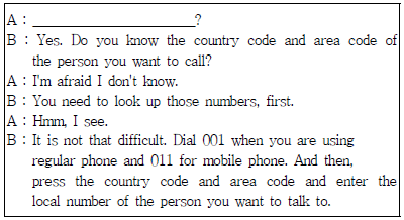
- Do you know how to operate the fax machine?
- Do you know how to place an order in a restaurant?
- Do you know how to make an overseas call?
- Do you know how to use the new security system?
(정답률: 65%)
56. According to the given passage, which of the followings is true?
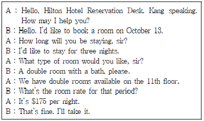
- The room rate is $175 for three nights.
- He is going to stay for three nights and four days.
- The room where he will be stay is on the 13th floor.
- He made a reservation a double room without a bath.
(정답률: 60%)
57. What should secretary do first, after the conversation with her boss?
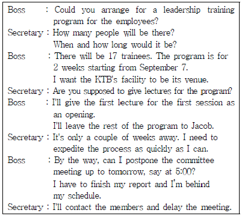
- To call the committee members and reschedule the meeting
- To contact the lecturers for the training sessions
- To contact KTB for the availability of the training facility
- To make a checklist of equipment necessary for lectures
(정답률: 57%)
58. According to the conversation, which of the followings is not true?
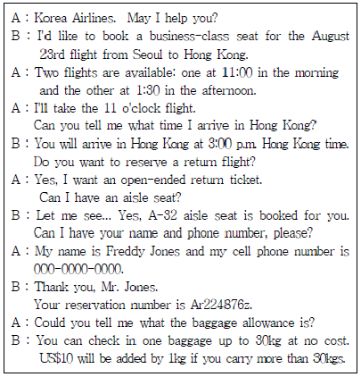
- Mr. Jones will travel business class.
- Mr. Jones did not reserve a return flight.
- Mr. Jones did not decide the return date from Hong Kong to seoul.
- Mr. Jones can check in one baggage up to 30kg free of charge.
(정답률: 58%)
59. Which of the followings is the most appropriate for the blank?
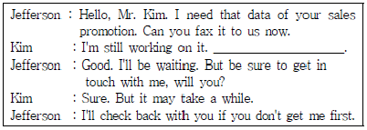
- So as soon as it's finished, I'll call you back, OK?
- The order will be faxed through to the manufacturer.
- If you have any other questions, just feel free to call me.
- You'll have to come in person in order to discuss that matter.
(정답률: 60%)
4과목: 사무정보관리
60. 다음 중 밑줄 친 부분의 한글 맞춤법이 잘못 표기된 것을 고르시오.
- 왠지 가슴이 두근거린다.
- 착한 사람이 돼라.
- 비서로서 나의 위치
- 출석율을 살펴보면
(정답률: 54%)
61. 다음 보기 중 비서가 우편제도를 제대로 활용하지 못한 경우를 모두 고르시오.
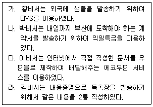
- 다
- 라
- 다, 라
- 가, 다
(정답률: 44%)
62. 상사는 우비서에게 주주총회 개최통지서를 주주들에게 발송하라고 지시하였다. 우편물 발송을 위해 레이블을 작성할 시 수신인 부분에 들어갈 말로 가장 적절한 것끼리 짝지어진 것은?
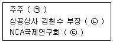
- ㉠ 각위, ㉡ 귀하, ㉢ 좌하
- ㉠ 제위, ㉡ 귀하, ㉢ 귀중
- ㉠ 귀중, ㉡ 님, ㉢ 귀하
- ㉠ 님, ㉡ 각위, ㉢ 귀하
(정답률: 62%)
63. 상사의 서류 및 우편물 개봉, 상사의 일정, 개인정보, 회사의 기밀내용 등과 관련된 업무처리 시 기본원칙으로 가장 잘못된 것은?
- 컴퓨터에 있는 정보는 수시로 백업해두고 암호를 설정한다.
- 정보의 접근권한과 범위에 대해 사내규정을 숙지한다.
- 정보에 대한 외부요청이 있을 경우 상사가 선호하는 방식으로 처리한다.
- 상사와 합의하여 비서의 정보접근권한과 범위를 정한다.
(정답률: 67%)
64. 다음과 같이 결재된 문서에 대한 설명으로 가장 적절한 것은?
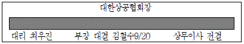
- 문서 담당자는 부장 김철수이며 상공협회장이 정규 결재 하였다.
- 문서 담당자는 대리 최우진이며 부장 김철수가 전결하였다.
- 문서 담당자는 대리 최우진이며 상무이사가 부장 김철수 대신에 대결하였다.
- 상무이사가 전결하여야 하는 문서이나 부재로 부장 김철수가 대결하였다.
(정답률: 67%)
65. 다음은 상공자동차의 문서관리규정 중 문서보존기간에 관한 사항이다. 아래 규정에 의거하여 2016년 2월에 폐기 여부를 검토할 수 없는 문서는?
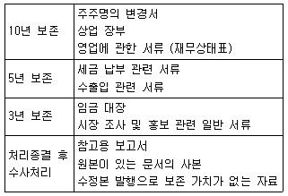
- 2010년의 세금 납부 관련 서류
- 2016년 1월에 작성한 보고서의 사본
- 2006년 연차 회계 보고서
- 2012년 2사분기 시장조사 보고서 원본
(정답률: 46%)
66. 문서정리의 절차를 올바르게 연결한 것을 고르시오.
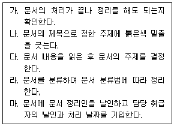
- 가 - 나 - 다 - 라 - 마
- 가 - 다 - 라 - 나 - 마
- 가 - 마 - 다 - 나 - 라
- 가 - 다 - 나 - 마 - 라
(정답률: 17%)
67. 다음 중 전자 문서 결재시스템의 올바르고 효율적인 활용으로 가장 적절하지 않은 경우는?
- 장비서는 사전에 전자문서결재시스템에 탑재된 문서양식을 이용하여 문서기안을 함으로써 효율성을 높였다.
- 정비서는 문서 유출에 대한 안전성을 확보하기 위하여 보안 설정을 이중으로 관리한다.
- 최비서는 종이문서를 선호하는 상사를 위하여 전자결재가 완료된 문서를 종이로 보관하였다.
- 오비서는 결재선에 포함되지 않아서 상사가 결재하는 타부서의 서류에 대한 열람권한이 없었으나, 추가 열람권한을 할당받아서 내용을 파악하였다.
(정답률: 48%)
68. 다음 중 전자문서 시스템에 대한 설명으로 가장 옳지 않은 것은?
- 전자문서 시스템과 전사적 콘텐츠 관리(ECM)는 최근 들어 더욱 분리되어 인식되고 있다.
- 전자결재는 미리 설정된 결재 라인에 따라 자동으로 결재파일을 다음 결재선으로 넘겨준다.
- 저장된 결재 문서를 불러내 재가공하여 사용할 수 있다.
- 전자 결재를 할 때는 전자문자 서명이나 전자이미지 서명을 한다.
(정답률: 47%)
69. 다음 중 전자문서에 대한 설명으로 가장 적절하지 않은 것은?
- 전자 문서 국제 표준은 doc 이다.
- 전자 문서 시스템은 전자 결재 시스템과 전자 문서 관리시스템(EDMS)으로 크게 나눌 수 있다.
- 전자 결재는 기본적으로 EDI 시스템 하에서 이루어지는 것이다.
- 전자 결재 시스템은 피결재자와 결재권자가 동시에 동일 위치에 존재하지 않아도 문서의 결재가 가능하여 시간적, 공간적 제약을 극복할 수 있다.
(정답률: 53%)
70. 다음 이메일의 머리글(Header)을 보고 이와 관련된 설명이 가장 적절하지 않은 것은?
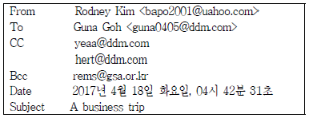
- 이메일을 보낸 사람은 Rodney Kim이며 출장과 관련된 내용으로 구성되어 있다.
- 이메일은 총 4명의 사람에게 발송되지만 Guna Goh는 자기에게만 이메일이 발송되었는지 알고 있다.
- yeaa@ddm.com은 hert@ddm.com이 이메일을 받은걸 알고 있다.
- hert@ddm.com은 rems@gsa.or.kr이 이메일을 받은걸 모르고 있다.
(정답률: 64%)
71. 벤처회사에 다니는 나비서는 상사를 위하여 프레젠테이션 자료를 준비하고 있다. 상사는 문장보다는 도해화한 프레젠테이션 자료를 선호하시는 편이라서 스마트아트를 활용하였다. 아래의 스마트 아트를 사용하는 상황에 관한 설명이 가장 적절하게 이루어진 것은?
 : 상호 인접한 사항에 대한 연관성을 살펴볼 때 사용
: 상호 인접한 사항에 대한 연관성을 살펴볼 때 사용 : 중앙의 내용에 대한 관계를 표시할 때 사용
: 중앙의 내용에 대한 관계를 표시할 때 사용 : 비례관계 및 상호 연결 관계, 계층 관계를 표시할 때 사용
: 비례관계 및 상호 연결 관계, 계층 관계를 표시할 때 사용 : 계획 또는 결과를 필터링하는 관계 표시 할 때 사용
: 계획 또는 결과를 필터링하는 관계 표시 할 때 사용
(정답률: 59%)
72. 김비서는 상사의 인맥관리를 위해 MS-Access프로그램을 이용해 명함정리와 내방객 관리를 하고 있다. 다음 중 김비서의 프로그램 사용법이 가장 적절하지 않은 것은?
- 테이블에 명함의 인적사항과 방문용건을 입력한다.
- 쿼리의 요약기능을 이용해 내방객의 연도별 평균 방문 횟수를 알 수 있다.
- 입력한 명함을 내방객별로 보고 싶으면 폼 개체를 이용한다.
- 매크로 기능을 이용해 연말 우편물의 레이블을 출력한다.
(정답률: 54%)
73. 다음의 신문기사의 분석내용으로 가장 적절하지 않은 것은?
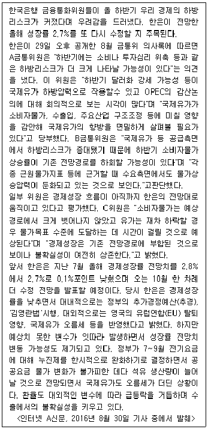
- 경제성장 흐름은 한국은행의 전망대로 움직이는 편이라 평가할 수 있다.
- 소비투자심리 위축으로 하반기에는 소비자물가 상승률이 기존보다 올라갈 가능성이 있다.
- 김영란법이나 영국의 EU탈퇴 영향, 국제유가 오름세는 경제 성장률을 낮출 가능성이 있다.
- 국제유가는 소비자물가, 수출입, 주요산업 구조조정 등에 영향을 미치는 요소이다.
(정답률: 46%)
74. 다음 IP 주소가 올바르지 않은 것은?
- 192.245.0.253
- 192.245.0.254
- 192.245.1.255
- 192.245.1.256
(정답률: 52%)
75. 아래 그림은 리우올림픽 메달 성적에 관한 것이다. 이에 대한 설명으로 가장 올바른 것은?
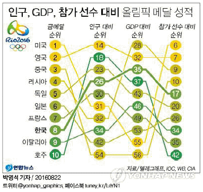
- 우리나라는 참가국 중에서 인구대비 순위로는 4등이다.
- 미국은 GDP대비 순위가 호주보다 높다.
- 참가국 중에서 참가선수 대비 순위가 가장 낮은 나라는 호주이다.
- 일본은 우리나라보다 금메달 수는 많지만, 다른 순위는 모두 낮다.
(정답률: 35%)
76. 상사의 인적네트워크를 위한 정보 관리에 관한 사항으로 적절하지 않은 것끼리 묶인 것은?
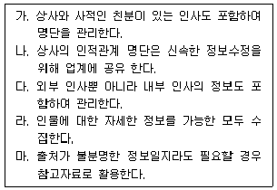
- 없다
- 나
- 나, 마
- 나, 라, 마
(정답률: 39%)
77. 김비서는 서울본사와 대전지사 두 곳의 집무실을 오가면서 업무를수행하고 있는 상사를 모시고 있다. 상사는 별도 휴대품 없이 김비서와 함께 일하는 본사 집무실 컴퓨터에서 작업하던 문서를 대전지사 집무실의 컴퓨터에서도 확인하고 작업하기를 원하신다. 2개의 집무실에 있는 각 컴퓨터에서 작업한 파일이 자동으로 동기화될 수 있어야 한다고 하셔서 김비서는 다음과 같은 서비스를 사용하실 것을 권유하였다. 이 경우에 가장 적절한 서비스에 해당하는 것은?
- SSD
- 소셜미디어
- 클라우드 서비스
- 이메일
(정답률: 75%)
78. 다음 중 성격이 유사한 어플리케이션끼리 짝지어지지 않은 것은?
- Uber - 카카오택시 - T맵택시
- 블루리본 – 카카오헤어 - 트립어드바이저
- CamCard – 리멤버 – BIZ reader
- Google calendar – Outlook – T cloud
(정답률: 48%)
79. 다음 감사장 작성에 관한 설명 중 가장 옳지 않은 것은?
- 취임축하장에 대한 감사장은 취임에 대한 포부와 결의를 밝힌 후에 축하장에 대한 감사 인사를 하는 순서로 작성한다.
- 수상 축하장에 대한 감사장은 수상할 수 있게 된 것이 상대방 덕분이라는 표현을 먼저 하는 것이 좋다.
- 출장 중 상대방의 호의에 대한 감사장은 가급적 출장지에서 돌아온 직후에 작성하는 것이 바람직하다.
- 문상에 대한 답례장은 미사여구를 나열하는 것보다는 솔직한 감사의 인사를 전한다.
(정답률: 55%)